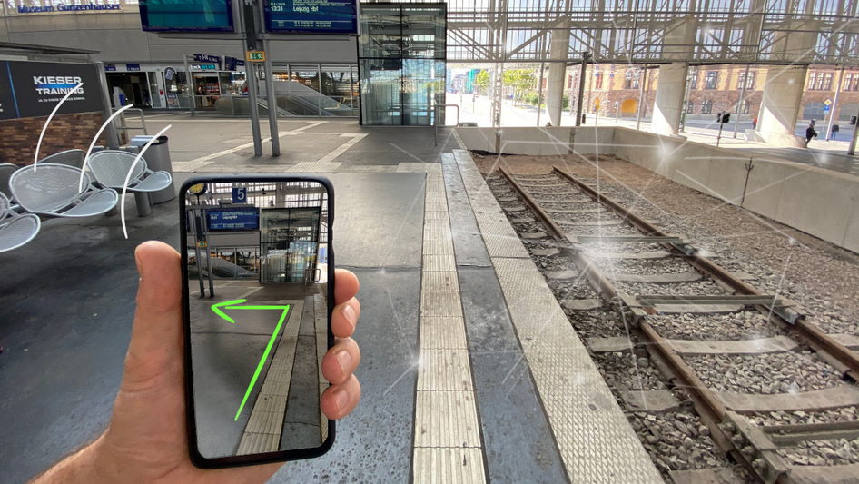

Interaktives Lernen und Training
Durch AR/VR werden Risiken reduziert, da schwierige oder gefährliche Szenarien virtuell geübt werden können und bieten realitätsnahe Simulationen. Das Marketing von Gaming und Freizeit lässt sich durch beeindruckende virtuelle Welten und erweiterte Erlebnisse revolutionieren. [1][3]
Effizienzsteigerung
VR erlaubt Design- und Prototyp-Iterationen in einer virtuellen Umgebung, bevor physische Modelle erstellt werden. Außerdem erfolgt die Reduzierung der Zeitkosten durch virtuelle Meetings oder Konferenzen. [2]
Barrierefreiheit
Kulturelle und geografische Erfahrungen wie Museumsbesuche oder Reisen werden für Menschen mit eingeschränkter Mobilität zugänglich.
